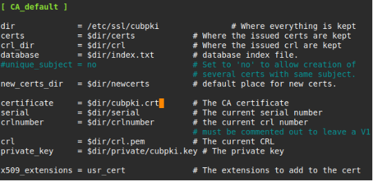
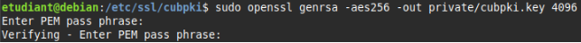
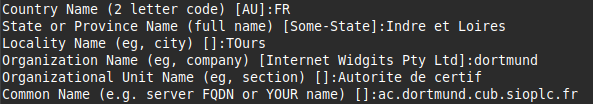
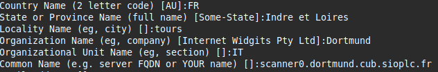
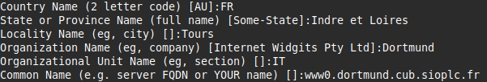
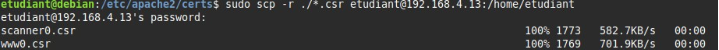
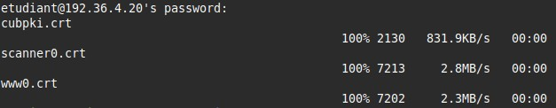
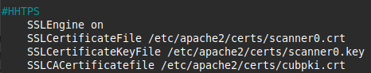
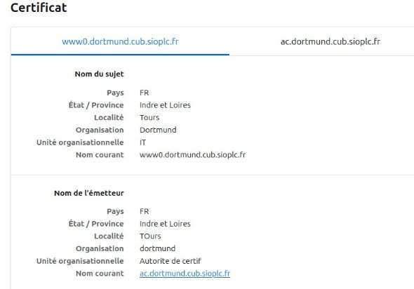

PKI INTERNE
Mise en place d’une PKI (autorité de certification) interne pour la gestion des certificats avec OpenSSL
Construction de l’arborescence de l’autorité :
cd cubpki/
sudo mkdir certs crl newcerts private sudo sh -c "echo '01' > serial"
sudo touch index.txt
sudo cp /usr/lib/ssl/openssl.cnf . sudo nano /etc/ssl/cubpki/openssl.cnf

cubpki.crt //Certificat de l’AC cubpki.key // Clé privé de l’AC
Initialisation de la clé privée de l’AC :
La commande suivante permet de générer le nouveau certificat de l’autorité de certification valable 1 an au format X509
sudo openssl genrsa -aes256 -out private/cubpki.key 4096
Permet de générer une clé privée RSA de 4096 bits protégée par une passphrase chiffrée avec l’algorithme de chiffrement symétrique AES 256.

Mise en place de la clé publique de l’AC :
sudo openssl req -new -x509 -nodes -sha256 -days 365 -key private/cubpki.key -out cubpki.crt

ac.dortmund.cub.sioplc.fr //FQDN de l’AC pour l’identifier
Mise en place d’une clé privée sur le serveur web :
Dans /etc/apache2/certs/
sudo openssl req -new -key scanner0.key -out scanner0.csr sudo openssl req -new -key www0.key -out www0.csr


scanner0.dortmund.cub.sioplc.fr //FQDN du site scanner0 www0.dortmund.cub.sioplc.fr //FQDN du site scanner0
Ensuite nous devons copier la demande de certificat (.csr) vers l’AC afin que celle-ci la signe et génère un certificat signé (.crt).
sudo scp -r ./*.csr etudiant@192.168.4.13:/home/etudiant 192.168.4.13 //IP de l’AC

Signature de la demande et production du certificat par l ‘AC sur le serveur PKI :
sudo openssl ca -config ./openssl.cnf -policy policy_anything -out scanner0.crt -infiles /home/etudiant/scanner0.csr
sudo openssl ca -config ./openssl.cnf -policy policy_anything -out www0.crt -infiles /home/etudiant/www0.csr
Puis nous renvoyons les certificats signés au serveur web pour les 2 sites sudo scp -r ./*.crt etudiant@192.36.4.20:/home/etudiant

Nous pouvons verifiez les envois dans /home/etudiant sur le serveur web avec la commande « ls »
Pour des raisons de bonnes pratiques il est conseillé de deplacer les certifiact stocker dans /home/etudiant/ dans /etc/apache2/certs/ grace a la commande** :
sudo mv ./*.crt /etc/apache2/certs/
Mise à niveau des virtualhosts :
Nous devons donc configurer nos 2 virtualhots afin d’y renseigner les certificat et les clés, donc : sudo nano /etc/apache2/sites-available/scanner0.conf
sudo nano /etc/apache2/sites-available/www0.conf

SSLCertificateFile /etc/apache2/certs/scanner0.crt – www0.crt SSLCertificateKeyFile /etc/apache2/certs/scanner0.key --- www0.key SSLCACertificatefile /etc/apache2/certs/cubpki.crt
Vérification :
